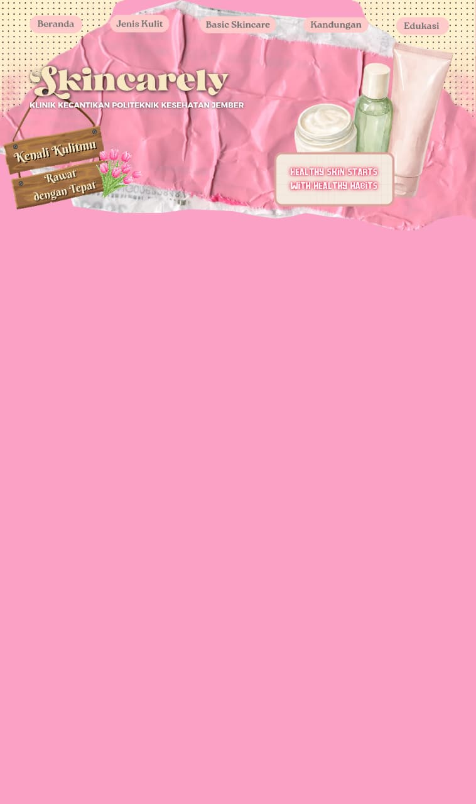

Apa itu Kesehatan Kulit?
Kondisi di mana lapisan luar kulit (skin barrier) berfungsi optimal, terjaga kelembapannya, serta bebas iritasi.
Mengapa Merawat Kulit Sangat Penting?
☀️ Pagi: Cleanser ➔ Moisturizer ➔ Sunscreen
🌙 Malam: Cleanser ➔ Treatment ➔ Moisturizer
💡 Rahasia Sunscreen:
"Setelah cuci muka tanpa skincare beberapa jam, apa yang kamu rasakan?"
| Kandungan | Manfaat Utama |
|---|---|
| Niacinamide | Memperbaiki barrier & kontrol minyak |
| Salicylic Acid (BHA) | Eksfoliasi & meredakan jerawat |
| Hyaluronic Acid | Hidrasi mendalam & mengenyalkan |
| Vitamin C | Mencerahkan kulit & antioksidan |
| Ceramide | Memperkuat skin barrier yang rusak |
© 2026 SkinCarely — Politeknik Kesehatan Jember